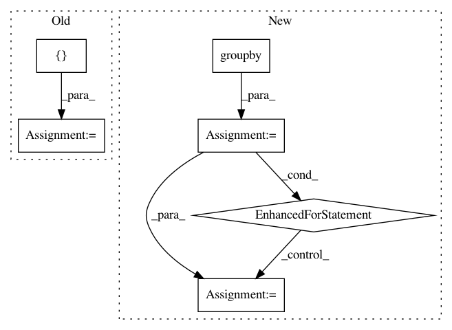

6096d22cbd933b764c8bf3197fe1f8e8722308c6,ilastik/applets/objectExtraction/opObjectExtraction.py,OpAdaptTimeListRoi,execute,#OpAdaptTimeListRoi#Any#Any#Any#Any#,197
Before Change
result = {}
for t in roi:
start = [0] * len(taggedShape)
stop = taggedShape.values()
start[timeIndex] = t
stop[timeIndex] = t + 1
After Change
timeIndex = taggedShape.keys().index("t")
// Get time ranges with consecutive numbers
time_ranges = [list(g) for _, g in groupby(roi, key=lambda n, c=count(): n - next(c))]
result = {}
for time_range in time_ranges:
start = [time_range[0]]
stop = [time_range[-1]+1]
val = self.Input(start, stop).wait()
for i, t in enumerate(time_range):
result[t] = val[i]
return result
def propagateDirty(self, slot, subindex, roi):
assert slot == self.Input
In pattern: SUPERPATTERN
Frequency: 3
Non-data size: 6
Instances
Project Name: ilastik/ilastik
Commit Name: 6096d22cbd933b764c8bf3197fe1f8e8722308c6
Time: 2016-10-25
Author: jimmycc80@hotmail.com
File Name: ilastik/applets/objectExtraction/opObjectExtraction.py
Class Name: OpAdaptTimeListRoi
Method Name: execute
Project Name: biocore/scikit-bio
Commit Name: e144e814fa4b542fa70c5b4c167d1253a7a25342
Time: 2014-04-29
Author: josenavasmolina@gmail.com
File Name: skbio/maths/gradient.py
Class Name:
Method Name: make_groups
Project Name: erikbern/ann-benchmarks
Commit Name: 21608a6b6e6883504a0bcb06abbf9c7d8029897b
Time: 2019-07-21
Author: maau@itu.dk
File Name: ann_benchmarks/distance.py
Class Name:
Method Name: transform_dense_to_sparse